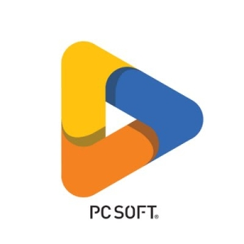

Compétences & Outils

WinDevLogiciels
VirtualBox
 Marionnet
MarionnetSoft Skills & Savoir-être
Autonomie & Rigueur
Capacité à prendre en charge des tâches complexes, à structurer son code et à respecter les exigences de qualité.
Adaptabilité
Facilité à monter rapidement en compétences sur de nouveaux langages, frameworks ou environnements d'entreprise.
Travail d'équipe & Esprit Agile
Collaboration fluide lors des projets de groupe (SAE) et en entreprise, écoute active et gestion collective des tâches.
Résolution de problèmes
Démarche analytique pour identifier rapidement l'origine d'un bug ou d'un dysfonctionnement et proposer une solution adaptée.